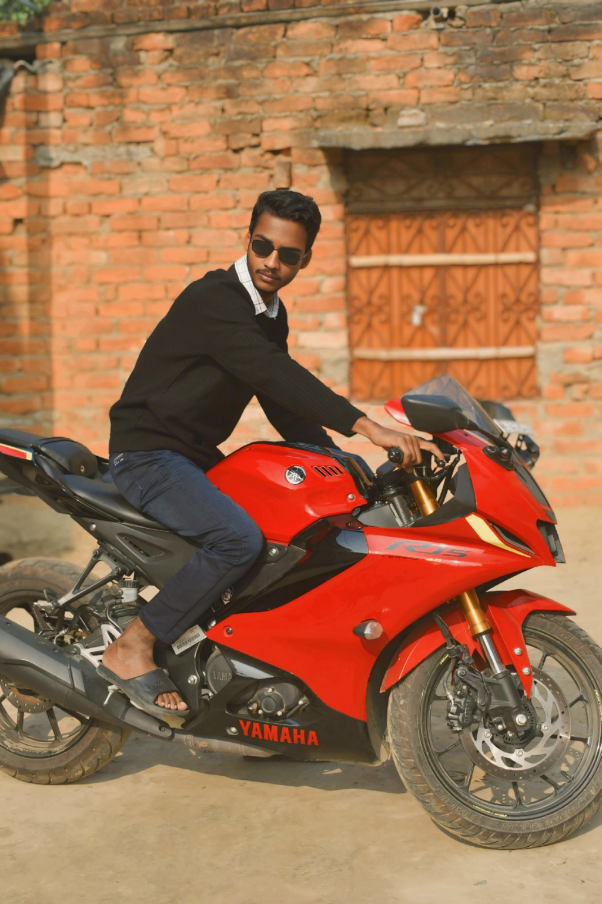
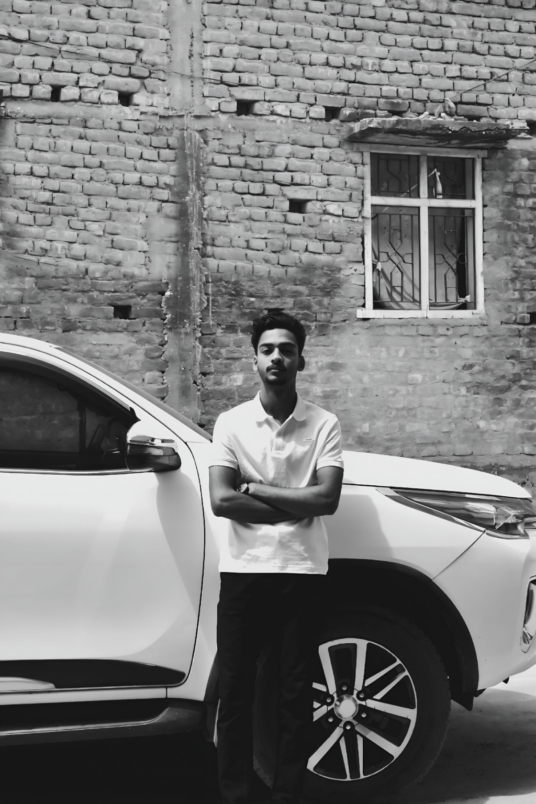

◎
Find the feeling.
We start with the mood, audience and one clear idea worth remembering.
RESEARCH / DIRECTION↗
INDEPENDENT VIDEO EDITOR · INDIA
STORIES BUILT TO BE FELT.
Cinematic edits, social-first storytelling and visuals with a pulse. From the first cut to the final colour grade — every second has a reason.

01 / THE METHOD
A good edit isn't just a sequence of clips. It's a feeling that gets stronger with every cut.
We start with the mood, audience and one clear idea worth remembering.
Footage, pacing, sound and transitions come together with intention.
Colour, detail and the final polish turn a video into a moment.
02 / SELECTED FRAMES
Two sides of the same visual story — raw character, considered framing and a cinematic point of view.

FRAME 0103 / INSIDE THE EDIT
A peek at the craft: timing, layered sound, colour and those tiny adjustments that change everything.
05 / BEHIND THE CUT
I'm Abdullah Ahmad, a video editor focused on cinematic mood, clean pacing and social-first storytelling. I believe the best edits don't shout for attention — they earn it.
Let's create something memorable ↗06 / YOUR TURN
For reels, shorts, personal edits or brand promos — tell me what you're imagining.
Connect on Instagram ↗